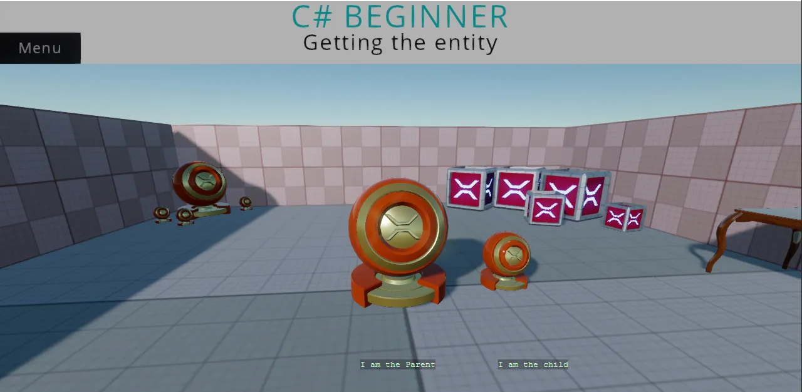

Getting the entity
You can find this sample in the tutorial project: Menu -> Getting an entity
Explanation
This C# Beginner tutorial covers how to get the entity object.
When a script is attached to an entity in the scene, we can access all properties of that Entity by using the Entity property. We can for instance get the entity's name or we can check if the entity has a parent in the scene.

Code
using Stride.Core.Mathematics;
using Stride.Engine;
namespace CSharpBeginner.Code
{
/// <summary>
/// This script demonstrates how to access the entity where the script is attached to.
/// We also learn how to access a parent of our entity and how to check if that entity exists.
/// <para>
/// https://doc.stride3d.net/latest/en/tutorials/csharpbeginner/entity.html
/// </para>
/// </summary>
public class GettingTheEntityDemo : SyncScript
{
private string name = string.Empty;
private string parentName = string.Empty;
// Executes only once, at the start of the game
public override void Start()
{
// We store the name of the Entity that we are attached to
name = Entity.Name;
// We retrieve the parent entity by using the GetParent() command.
var parentEntity = Entity.GetParent();
// It is possible that our entity does not have a parent. We therefore check if the parent is not null.
if (parentEntity != null)
{
// We store the name of our Parent entity
parentName = parentEntity.Name;
}
// The above code can be shortened to 1 line by using the '?' operator
parentName = Entity.GetParent()?.Name ?? string.Empty;
}
// Updates every frame
public override void Update()
{
// Using the 'DebugText.Print' command, we can quickly print information to the screen
// NOTE: DebugText only works when debugging the game. During release it is automatically disabled
DebugText.Print(parentName, new Int2(580, 580));
DebugText.Print(name, new Int2(800, 580));
}
}
}